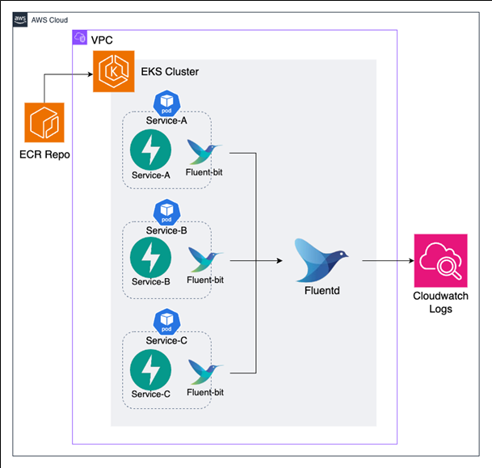

2024년도 전국기능경기대회
1. 요구사항
여러개의 서비스를 EKS에서 운영해야하는 상황입니다. 각 서비스별로 다른 내용의 로그를 출력하며, 각 서비스의 로그는 Sidecar 컨테이너가 각 노드에 위치한 Fluentd로 로그를 전송해야 합니다. Fluentd는 수집한 로그들을 CloudWatch Logs에 전송해야하며, 해당 로그들은 CloudWatch Logs를 통해 조회가 가능해야합니다.
다이어그램

Software Stack
2. 선수 유의사항
1) 기계 및 공구 등의 사용 시 안전에 유의하시고, 필요 시 안전장비 및 복장 등을 착용하여 사고를 예방하여 주시기 바랍니다.
2) 작업 중 화상, 감전, 찰과상 등 안전사고 예방에 유의하시고, 공구나 작업도구 사용 시 안전보호구 착용 등 안전수칙을 준수하시기 바랍니다.
3) 작업 중 공구의 사용에 주의하고, 안전수칙을 준수하여 사고를 예방하여 주시기 바랍니다.
4) 경기 시작 전 가벼운 스트레칭 등으로 긴장을 풀어주시고, 작업도구의 사용 시 안전에 주의하십시오.
5) 선수의 계정에는 비용의 제한이 존재하며, 이보다 더 높게 요금이 부과될 시 계정 사용이 불가능할 수 있습니다.
6) 문제에 제시된 괄호 박스 <>는 변수를 뜻함으로 선수가 적절히 변경하여 사용해야 합니다.
7) EC2 인스턴스의 TCP 80/443 outbound는 anyopen하여 사용할 수 있도록 합니다.
8) 과제의 Bastion 서버에서 대부분의 채점이 이루어짐으로 인스턴스를 생성하지 않았거나 종료된 상태면 채점이 불가능하니 각별히 주의하도록 합니다.
9) 과제 종료 시 진행 중인 테스트를 모두 종료하여 서버에 부하가 발생하지 않도록 합니다.
10) 별도 언급이 없는 경우, ap-northeast-2 리전에 리소스를 생성하도록 합니다.
11) 1페이지의 다이어그램은 구성을 추상적으로 표현한 그림으로, 세부적인 구성은 아래의 요구사항을 만족시킬 수 있도록 합니다. (ex. 서브넷이 2개 이상 존재할 수 있습니다.)
12) 모든 리소스의 이름, 태그, 변수과 변수는 대소문자를 구분합니다.
13) 문제에서 주어지지 않는 값들은 AWS Well-Architected Framework 6 pillars를 기준으로 적절한 값을 설정해야 합니다.
14) 불필요한 리소스를 생성한 경우, 감점의 요인이 될 수 있습니다. (e.g. VPC 추가 생성)
3. Collect application logs using Fluent-bit and Fluentd
Module: 14) EKS Observability
1. Bastion
- 채점을 위한 Bastion EC2를 생성하고, Bastion은 정상적으로 EKS Cluster에 클러스 터 관리자 권한으로 접근할 수 있어야 합니다.
- Bastion EC2는 채점을 위해 인스턴스 IAM Role에 AdministratorAccess 정책을 추가해야 합니다.
2. 애플리케이션
- 주어진 Source Code와 requirements 파일은 수정이 불가능하고, Dockerfile은 수 정이 가능합니다.
- Application Source Code는 컨테이너 이미지로 빌드하여 ECR에 업로드해야 합니 다.
- Application은 로그를 상대 경로 log/app.log 에 저장합니다.
- Sidecar Fluentbit 이미지는 fluent/fluent-bit:latest를 사용해야 합니다.
3. Logging
- 각각의 Application은 로그를 fluent-bit sidecar를 통해 fluentd로 전송해야 합 니다.
- Fluentd는 DaemonSet으로 배포되어야 합니다.
- Fluentd에서는 CloudWatch Logs Plugin을 추가해야 하므로, 대신에 이미 설치되어 있는 fluent/fluentd-kubernetes-daemonset:v1.10.3-debian-cloudwatch-1.0 이미 지를 사용합니다.
- Fluentd는 수집한 로그들을 CloudWatch Logs로 전송해야 합니다.
- CloudWatch Logs에서 30초 내로 Fluentd에서 전송하는 로그를 확인할 수 있어야 합니다.
- 과제 수행 중 생성해야 하는 리소스 값들은 아래를 참조합니다.